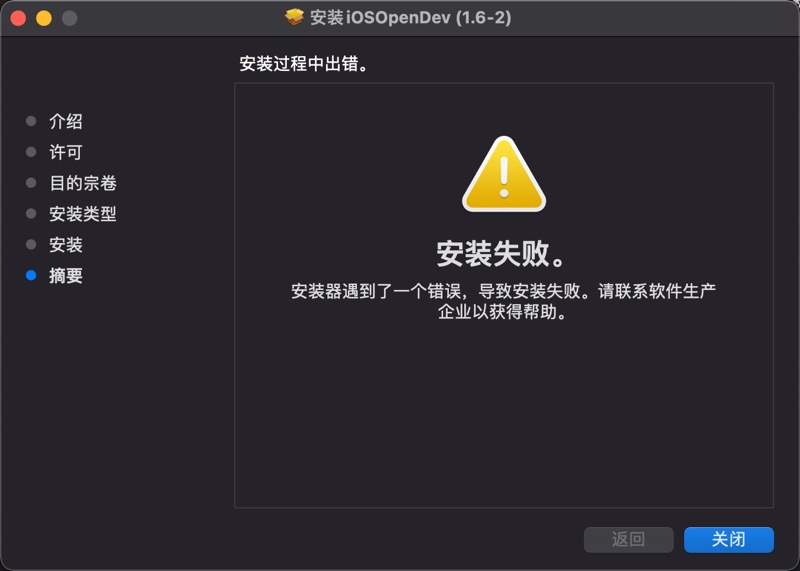

初始化环境方面的问题
安装器遇到了一个错误，导致安装失败
安装到最后，报错：安装失败 安装器遇到了一个错误，导致安装失败

解决办法：
其实此时iOSOpenDev的主体文件已安装到了默认的位置/opt中，接着去用工具初始化即可解决问题：
cd /opt/iOSOpenDevSetup/bin
sudo ./iod-setup base
sudo ./iod-setup sdk -sdk iphoneos
PrivateFramework directory not found XCode iPhoneOS15.0.sdk
iod-setup sdk -sdk iphoneos时报错：
➜ bin sudo ./iod-setup sdk -sdk iphoneos
Setting up iPhoneOS 15.0 SDK...
Modifying SDK settings...
Symlinking to private frameworks header files...
PrivateFramework directory not found: /Applications/Xcode.app/Contents/Developer/Platforms/iPhoneOS.platform/Developer/SDKs/iPhoneOS15.0.sdk/System/Library/PrivateFrameworks
原因：
此处是比较新的XCode 13和对应的iOS 15
->而最新版XCode和iOS早已将私有库PrivateFrameworks移走了
->即iPhoneOSxx.xx.sdk/System/Library/下面没有PrivateFrameworks了
解决办法：
- 自己之后是否用到私有库PrivateFrameworks
- 否
- 直接新建一个空目录即可
cd /Applications/Xcode.app/Contents/Developer/Platforms/iPhoneOS.platform/Developer/SDKs/iPhoneOS15.0.sdk/System/Library sudo mkdir PrivateFrameworks
- 直接新建一个空目录即可
- 是
- 除了新建目录外，还要把相关iPhoneOS版本的私有库的内容放过去
- 先要找到相关iPhoneOS的PrivateFrameworks
- 除了新建目录外，还要把相关iPhoneOS版本的私有库的内容放过去
- 否
File not found XCode Specifications iPhoneOSPackageTypes.xcspec
iod-setup sdk -sdk iphoneos报错：
➜ bin sudo ./iod-setup sdk -sdk iphoneos
Password:
Setting up iPhoneOS 15.0 SDK...
Modifying SDK settings...
Symlinking to private frameworks header files...
Adding specifications to platform...
File not found: /Applications/Xcode.app/Contents/Developer/Platforms/iPhoneOS.platform/Developer/Library/Xcode/Specifications/iPhoneOSPackageTypes.xcspec
原因：
找不到specifications
解决办法：
下载别人给的：
- 4个iPhoneOS的spec文件
- 4个iPhoneSimulator的spec文件
分别放到对应位置，即可。
下载来源：
下载后，可以看到Specifications中有8个spec。
分别新建Specifications目录：
sudo mkdir /Applications/Xcode.app/Contents/Developer/Platforms/iPhoneOS.platform/Developer/Library/Xcode/Specifications
sudo mkdir /Applications/Xcode.app/Contents/Developer/Platforms/iPhoneSimulator.platform/Developer/Library/Xcode/Specifications
再去
- 移动文件
- 把
- 4个
iPhoneOS的文件- iPhoneOSPackageTypes.xcspec
- iPhoneOSPackageTypes.xcspec.iOSOpenDev
- iPhoneOSProductTypes.xcspec
- iPhoneOSProductTypes.xcspec.iOSOpenDev
- 放到：
- /Applications/Xcode.app/Contents/Developer/Platforms/iPhoneOS.platform/Developer/Library/Xcode/Specifications
- 4个
- 把：
- 4个
iPhoneSimulator的文件- iPhone Simulator PackageTypes.xcspec
- iPhone Simulator PackageTypes.xcspec.iOSOpenDev
- iPhone Simulator ProductTypes.xcspec
- iPhone Simulator ProductTypes.xcspec.iOSOpenDev
- 放到：
- /Applications/Xcode.app/Contents/Developer/Platforms/iPhoneSimulator.platform/Developer/Library/Xcode/Specifications
- 4个
- 把
放好后是：
➜ Xcode ll /Applications/Xcode.app/Contents/Developer/Platforms/iPhoneOS.platform/Developer/Library/Xcode/Specifications
total 48
-rwxr-xr-x@ 1 crifan wheel 3.2K 12 24 2015 iPhoneOSPackageTypes.xcspec
-rwxr-xr-x@ 1 crifan wheel 5.4K 12 24 2015 iPhoneOSPackageTypes.xcspec.iOSOpenDev
-rwxr-xr-x@ 1 crifan wheel 4.0K 12 24 2015 iPhoneOSProductTypes.xcspec
-rwxr-xr-x@ 1 crifan wheel 6.4K 12 24 2015 iPhoneOSProductTypes.xcspec.iOSOpenDev
➜ Xcode ll /Applications/Xcode.app/Contents/Developer/Platforms/iPhoneSimulator.platform/Developer/Library/Xcode/Specifications
total 48
-rwxr-xr-x@ 1 crifan wheel 3.4K 12 24 2015 iPhone Simulator PackageTypes.xcspec
-rwxr-xr-x@ 1 crifan wheel 6.9K 12 24 2015 iPhone Simulator PackageTypes.xcspec.iOSOpenDev
-rwxr-xr-x@ 1 crifan wheel 3.4K 12 24 2015 iPhone Simulator ProductTypes.xcspec
-rwxr-xr-x@ 1 crifan wheel 6.1K 12 24 2015 iPhone Simulator ProductTypes.xcspec.iOSOpenDev
另外，新建usr的bin目录：
sudo mkdir /Applications/Xcode.app/Contents/Developer/Platforms/iPhoneSimulator.platform/Developer/usr/bin
即可。
Host key verification failed
- 现象：
Xcode编译期间报错：
Preparing to run Xcode Build Phase...
Signing /Users/crifan/Library/Developer/Xcode/DerivedData/iOSBypassJailbreak-bfqgivvncccwmeaykhtbtvgylkkq/Build/Products/Release-iphoneos/iOSBypassJailbreak.dylib with ldid... Done.
Copying /Users/crifan/Library/Developer/Xcode/DerivedData/iOSBypassJailbreak-bfqgivvncccwmeaykhtbtvgylkkq/Build/Products/Release-iphoneos/iOSBypassJailbreak.dylib to package directory at /Users/crifan/dev/dev_root/crifan/iOSBypassJailbreak/iOSBypassJailbreak/Package/Library/MobileSubstrate/DynamicLibraries...
Preparing to build package...
Setting control file /Users/crifan/dev/dev_root/crifan/iOSBypassJailbreak/iOSBypassJailbreak/Package/DEBIAN/control Version field to 1.0-1 using /Users/crifan/dev/dev_root/crifan/iOSBypassJailbreak/iOSBypassJailbreak/PackageVersion.plist... Done.
Building package ... Done.
Creating zip /Users/crifan/dev/dev_root/crifan/iOSBypassJailbreak/Packages/com.crifan.iOSBypassJailbreak_1.0-1_iphoneos-arm.zip... Done.
Host key verification failed.
Failed to create directory /var/root/iOSOpenDevPackages on device 192.168.1.27
Command PhaseScriptExecution failed with a nonzero exit code
- 原因：没有ssh免密登录
- 解决办法：设置好ssh免密登录